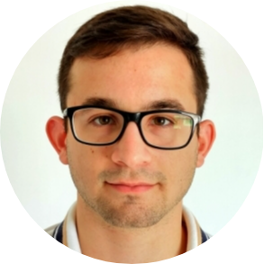

|  | Pablo David Emanuel CornelliElectronic Engineer, FPGA developer at INVAP S.E. I am an FPGA developer for Radar and Satellite applications at INVAP S.E. (Argentina).
|
| Dates | Titles |
|---|---|
| 2013 - 2018 | Degree in Electronic Engineering Catholic University of Córdoba – Engineering Faculty, Córdoba, Argentina |
| 2016 | Undergraduate Degree in Embedded Systems Catholic University of Córdoba – Engineering Faculty, Córdoba, Argentina |
| 2017 | Undergraduate Degree in Renewable Energies Catholic University of Córdoba – Engineering Faculty, Córdoba, Argentina |
| 2007 - 2012 | Electronic Technician Salesian Villada Technical Institute, Córdoba, Argentina |
| 2018 - 2019 | Undergraduate Degree in Sales and Negotiation Formación Integral, Capacitación y Desarrollo Educativo, Córdoba, Argentina |
| Dates | Courses |
|---|---|
| 2021 | The Complete 2021 Web Development Bootcamp Udemy |
| 2020 | Advanced Digital Designs (FPGA & ASIC oriented) National University of Córdoba, Facultad de Ciencias Exactas y Naturales, Córdoba, Argentina |
| 2020 | Financial Markets Yale University – Coursera |
| 2020 | Python Programming Universidad Austral – Coursera |
| 2019 | International Commerce and Marketing National University of Córdoba, Faculty of Economic Sciences, Córdoba, Argentina |
| 2019 | Assistant of Accounting and Management tasks in small and medium enterprises (SMB) National University of Córdoba, Faculty of Economic Sciences, Córdoba, Argentina |
| 2018 - 2019 | Managerial Administration & Management Technological University of Córdoba, Córdoba, Argentina |
| 2018 | International English Exam TOEFL Instituto de Intercambio Cultural Argentino Norteamericano (IICANA), Córdoba, Argentina |
| Dates | Work |
|---|---|
| 2017 - Present | INVAP S.E. Aerospace & Government division and Department of Instrumentation & Control:
|
| 2015 | Monitora Seguridad Inteligente S.R.L., Technical installer of security systems. |
| 2012 | Nativa S.R.L., Intern carrying out the task of diagnosis and repair of medical equipment and supplies. |
| 2012 - 2015 | On my own, electrical home installations. |
|
|